Jiří Padevět
Krátká věta kandidáta.
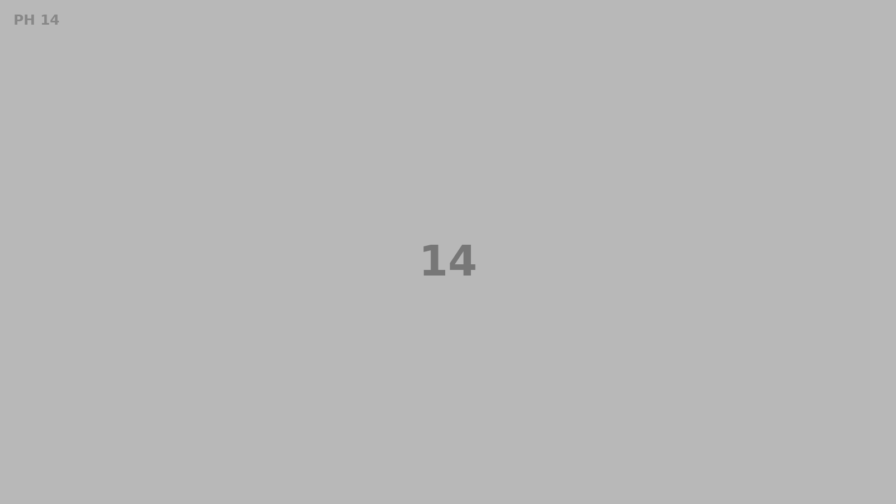
▶Piráti + Starostové pro Prahu 7
Bydlení, školy, seniory, veřejný prostor a parkování.
Volby do zastupitelstva: 9.–10. října 2026
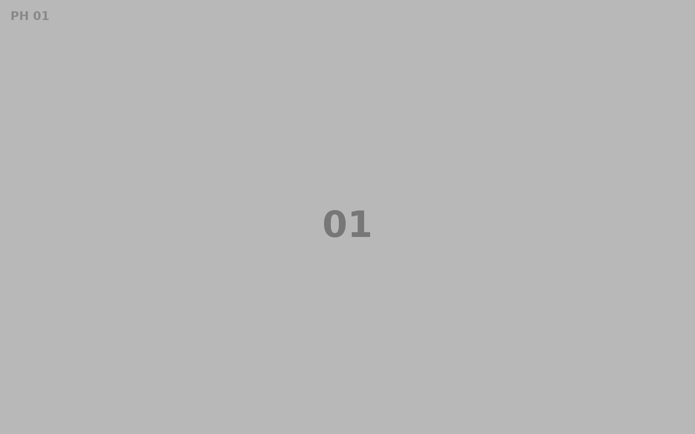
Praha 7 potřebuje starostování jako řemeslo.
Chceme radnici, která s lidmi mluví dřív, než rozhodne. Ne osvícené vládnutí zhůry: bydlení, školy, péče, veřejný prostor, doprava.
Program pro Prahu 7
Více městských bytů, jasná pravidla a ochrana lidí, kteří na Sedmičce opravdu žijí.
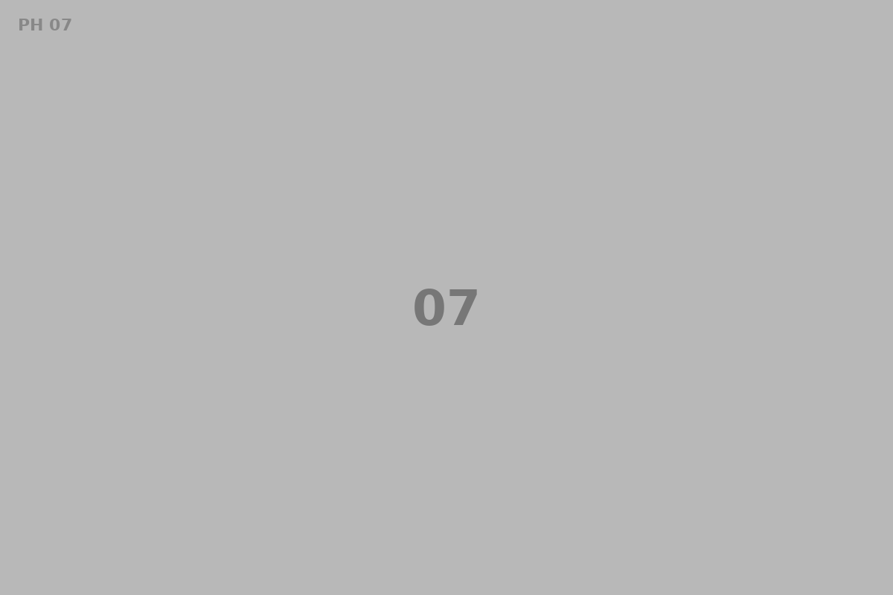
Dostupná pomoc blíž domovu. Služby, které člověk najde dřív, než je začne zoufale shánět.
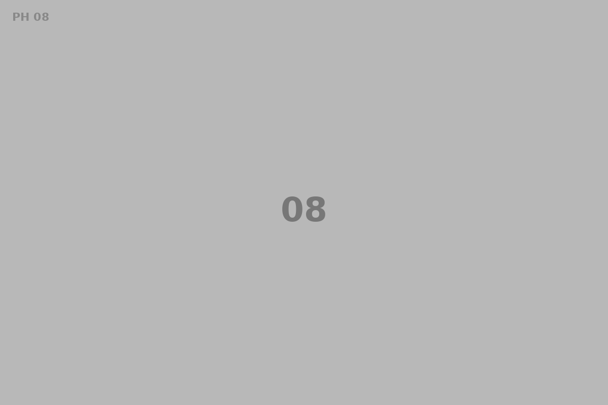
Dostatek míst, kvalitní prostředí a podpora lidí, kteří každý den drží školy v chodu.
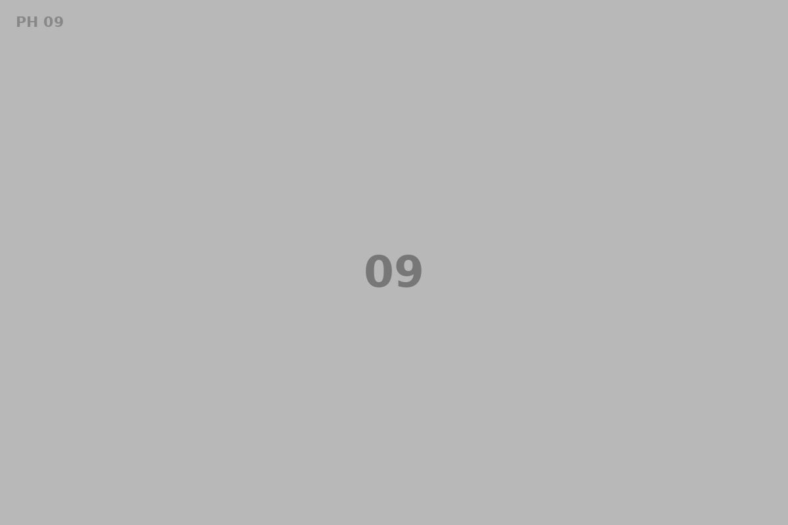
Stín, voda, stromy a propustné povrchy. Praha 7 musí být obyvatelná i v horkém létě.
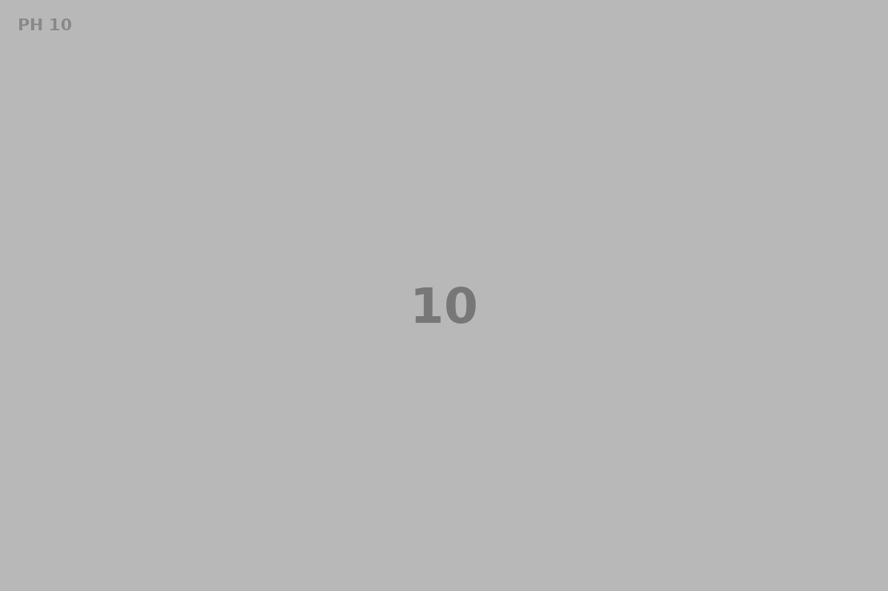
Živá čtvrť potřebuje kluby, hřiště, spolky, knihovny, galerie i místa pro sousedské setkávání.
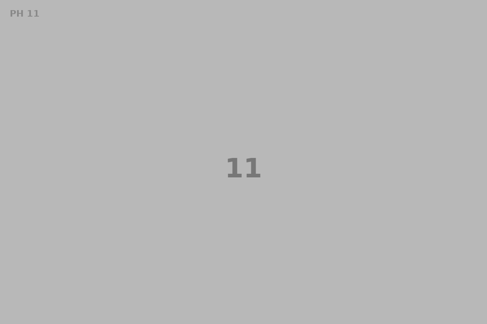
Parkování nemá být za trest. Ale nežijeme jen kvůli autu.
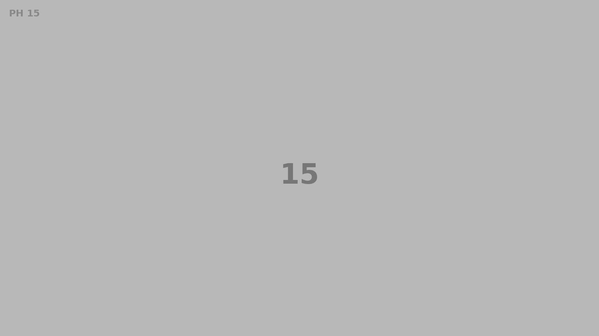
Bubny-Zátory
Parkování se nevyřeší hrou na schovávanou. Musíme myslet do budoucna, ne jen na to, co je teď. Potřebujeme vědět, kde místa chybí, kde jsou nevyužité kapacity a jaký dopad bude mít výstavba.
Dále k tématuVrátíme dialog
Praha 7 potřebuje radnici, která s lidmi mluví předtím, než rozhodne. Chceme veřejná setkání, otevřená data a rozhodnutí, u kterých je jasné, proč k nim došlo.
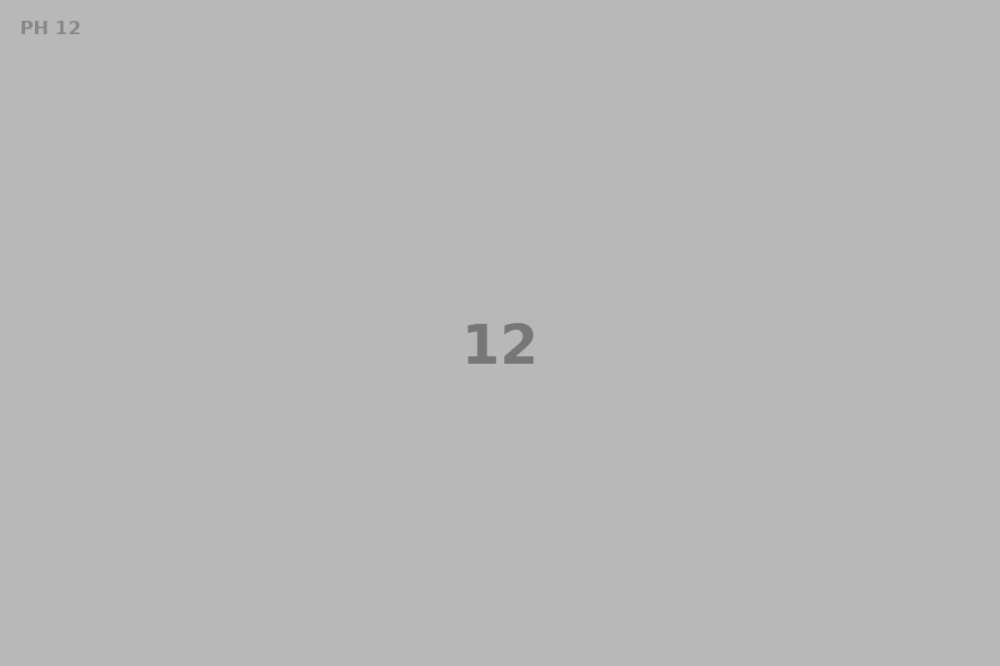
V médiích a na našich kanálech
Krátké formáty pro sociální sítě, delší vysvětlení v článcích a podcastech a odkazy na výstupy v médiích.
Kdo za tím stojí
Krátká věta kandidáta.
Krátká věta kandidáta.
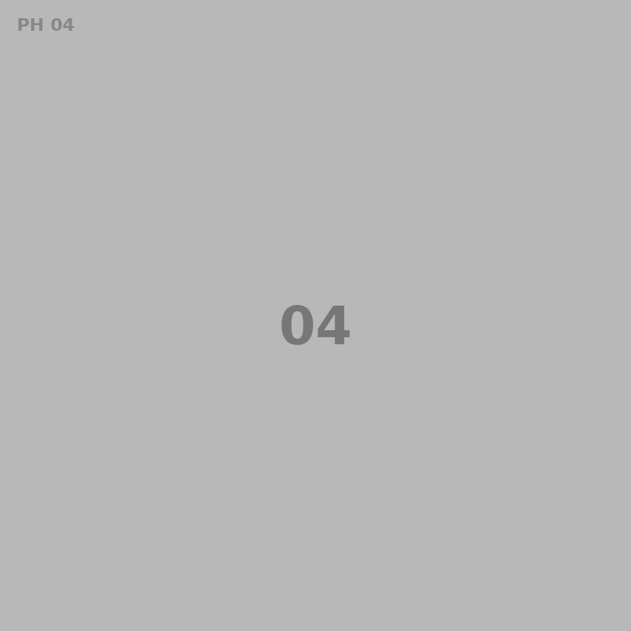
Krátká věta kandidáta.
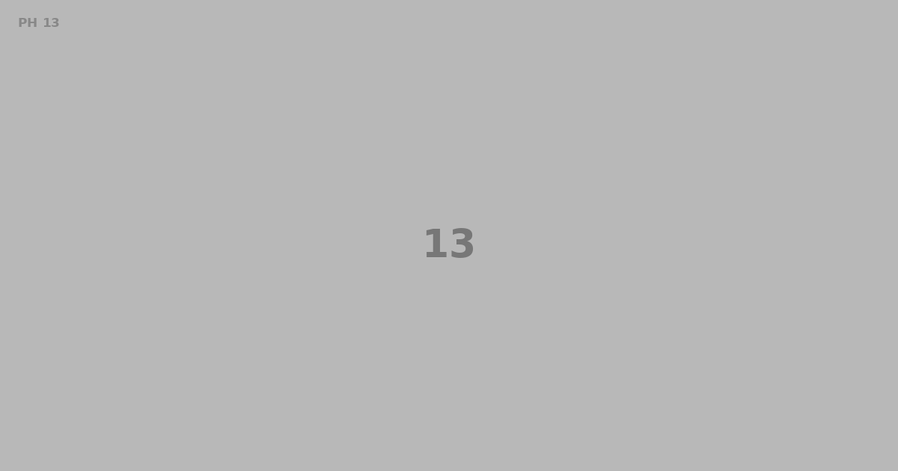
Volby
Nezapomeňte si doklady. Komunální volby jsou o tom, co se děje ve vašem okolí.